측량및지형공간정보기사 (2008-05-11 기출문제)
1과목: 측지학 및 위성측위시스템
1. 다음 중 지자기 측량의 3요소는?
- 편각, 복각, 수평분력
- 복각, 연직각, 수평분력
- 복각, 수평각, 연직분력
- 편각, 복각, 연직분력
(정답률: 알수없음)

2. 임의 시간에 GPS 관측을 실시한 결과 PRN7 위성으로부터 수신기로 들어온 L1신호 주파수의 부분주파수가 반파장인 경우, L1신호의 모호정수(ambiguity) N은 얼마인가? (단, L1신호의 파장 λ=19.0㎝ 이며 PRN7 위성과 수신기간의 정확한 거리는 19,000,000.095m 이다.)
- 100,000,000
- 50,000,000
- 10,000,000
- 5,000,000
(정답률: 알수없음)
3. 지구가 타원형인 증거가 되는 사항에 대한 설명으로 틀린것은?
- 고위도로 갈수록 만유인력이 크다.
- 고위도로 갈수록 곡률반경이 크다.
- 위도차의 1° 거리는 위도로 갈수록 길다.
- 중력이 적도상에서 가장 크다.
(정답률: 알수없음)
4. 다음 중 UTM 좌표계에 대한 설명으로 옳은 것은?
- 각 구역은 서쪽방향으로 10° 간격으로 1부터 번호를 붙인다.
- 지구전체를 경도 6° 씩 60구역으로 나눈다.
- 위도는 남, 북위 60° 까지만 포함한다.
- 위도 80° 이상의 양극지역의 좌표도 포함된다.
(정답률: 알수없음)
5. 그림과 같이 지구상의 한점(A)에서 지구타원체에 대한 법선이 적도면과 이루는 각도를 무엇이라 하는가?
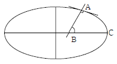
- 지심위도
- 측지위도
- 천문위도
- 화성위도
(정답률: 알수없음)
6. 지구의 반지름을 6370㎞라 할 때 거리의 허용오차를 1/106이라 할 경우 평면 측량의 허용범위는?
- 반경 10㎞ 이하
- 반경 11㎞ 이하
- 반경 15㎞ 이하
- 반경 22㎞ 이하
(정답률: 알수없음)
7. 우리나라의 평 면 직각좌표의 원점은 어떻게 구성되어 있는가?
- 동부, 서부, 남부, 북부 원점
- 동부, 서부, 북부, 중부 원점
- 동부, 서부, 중부, 동해 원점
- 동해, 남부, 북부, 중부 원점
(정답률: 알수없음)
8. “산지에서 측정된 중력은 표준중력보다 작다.”에서 산지의 지하에 암시 되는 사항에 대한 설명으로 옳은 것은?
- 산지의 지하는 밀도가 큰 물질로 되어 있을 것이다.
- 산지의 지하는 지질시대 때 융기되어 있을 것이다.
- 산지의 지하는 중간층 물질로 되어 있을 것이다.
- 산지의 지하는 밀도가 작은 물질로 되어 있을 것이다.
(정답률: 알수없음)
9. GPS에서 두 개의 주파수를 사용하는 이유는?
- 전리층의 효과를 제거(보정)하기 위해
- 대류권의 효과를 제거(보정)하기 위해
- 시계오차를 제거(보정)하기 위해
- 다중반사를 제거(보정)하기 위해
(정답률: 알수없음)
10. 다음 중 DGPS에 대한 설명으로 틀린 것은?
- 일반적으로 DGPS가 단독측위보다 정확하다.
- DGPS에서는 2개의 수신기에 관측된 지료를 사용한다.
- DGPS에서는 2개의 수신기의 위치를 동시에 계산한다.
- 기선의 길이가 길수록 DGPS의 정확도는 낮다.
(정답률: 알수없음)
11. 지구의 기하학적 성질에 관계되는 용어에 대한 설명 중 틀린 것은?
- 측지선은 자오선과 항상 같은 각도를 유지하는 선으로 등방위선이라고도 한다.
- 평행권이란 적도와 나란한 평면과 지표면의 교선이다.
- 지축이란 지구의 자전축이다.
- 천문위도는 지오이드에 준거하여 관측한다.
(정답률: 알수없음)
12. 다음의 설명 중 옳지 않은 것은?
- 평면측량은 지표면을 평면으로 간주하여 실시하는 측량이다.
- 길이 및 시(時)의 결정은 기하학적 측지학에 속한다.
- 사진측량과 지형도 제작은 물리학적 측지학에 속한다.
- 측지측량은 지구의 곡률을 고려한 정밀측량이다.
(정답률: 알수없음)
13. 다음 지자기의 일변화의 원인 중 가장 주된 요인은?
- 태양
- 달
- 지구 내부의 원인
- 조석
(정답률: 알수없음)
14. 상대측위 방법(간섭계측위)의 설명 중 옳지 않은 것은?
- 전파의 위상차를 관측하는 방식으로서 정밀측량에 주로 사용된다.
- 위상차의 계산은 단순차, 2중차 , 3중차의 차분 기법을 적용할 수 있다.
- 수신기 1대를 사용하여 모호 정수를 구한 뒤 측위를 실시한다.
- 위성과 수신기간 전파의 파장 개수를 측정하여 거리를 계산한다.
(정답률: 알수없음)
15. 지표면상의 구면 삼각형 △ABC의 세 각을 관측한 결과 A = 51° 30′, B = 65° 45′, C = 64° 35′ 이었다. 구면 삼각형의 면적은? (단, 지구반지름 R = 6,300㎞이며, 측각오차는 없는 것으로 가정한다.)
- 1,118,633.4㎞2
- 1,269,987.6㎞2
- 1,298,366.4㎞2
- 1,596,427.4㎞2
(정답률: 알수없음)
16. GPS 시스템 오차 원인과 가장 거리가 먼 것은?
- 위성 시계 오차
- 위성 궤도 오차
- 코드 오차
- 전리층과 대류권에 의한 오차
(정답률: 알수없음)
17. GPS는 원래 군대에서 사용할 목적으로 개발되었다. 이에 따라 일반인들이 정확한 신호를 얻지 못하도록 원래 신호를 암호화 하여 전송하게 되는데 이것을 무엇이라고 하는 가?
- 시계오차
- 궤도 오차
- Selective Availability
- Anti-Spoofing
(정답률: 64%)
18. 다음 중 인공위성의 궤도 요소에 해당 되지 않는 것은?
- 장반경
- 근지점 인수
- 인공위성 무게
- 궤도 경사각
(정답률: 알수없음)
19. 다음 중 관성 항법장치에서 획득되는 관측치는?
- 거리
- 속도
- 가속도
- 절대위치
(정답률: 알수없음)
20. 항공 및 해상 중력관측의 경우 이동중 관측을 실시하게 되므로 관측기기의 속도에 의란 영향을 보정하기 위한 것은?
- 아이소스타시 보정
- 에트베스 보정
- 프리에어 보정
- 부게(bouguer)보정
(정답률: 알수없음)
2과목: 응용측량
21. 노선의 단곡선을 설치하는 방법 중 접선과 현이 이루는 각을 이용하여 설치하는 방법으로 정확도가 비교적 높아 많이 이용되는 방법은?
- 편각 설치법
- 절선편거와 현편거에 의한 방법
- 장현에 대한 종거와 횡거에 의한 방법
- 절선에 대한 지거에 의한 방법
(정답률: 알수없음)
22. 수애선(水涯線) 및 수애선측량에 관한 설명으로 옳지 않은 것은?
- 심천측량에 의한 방법을 이용할 때에는 수위의 변화가 적은 시기에 심천측량을 행하여 하천의 횡 단면도를 먼저 만든다.
- 수애선은 하천 수위에 따라 변동하는 것으로 최저수위에 의하여 정해진다.
- 수면과 하안과의 경계선을 수애선이라 한다.
- 수애선 측량에는 심천측량에 의한 방법과 동시관측에 의한 방법이 있다.
(정답률: 알수없음)
23. 다음 그림과 같은 5각형 토지 ABCDE를 동일 면적의 사각형 토지로 하기 위해 DC의 연장선상에 경계점 F를 설치하고자 한다.
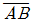
= 40m,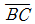
= 25m, ∠ACB=30˚ , ∠BCF = 80˚ 라 할 때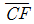
의 거리는?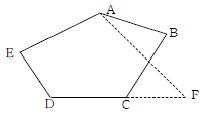
- 12.7m
- 12.9m
- 13.1m
- 13.3m
(정답률: 알수없음)
24. 사갱의 고저차를 구하기 위해 측량을 하여 다음 결과를 얻었다. A, B의 고저차는 얼마인가? (단, A점의 기계높와 B점의 시준높이는 천장으로부터 잰 값이다)
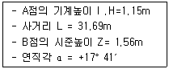
- 8.63m
- 9.36m
- 10.04m
- 11.42m
(정답률: 알수없음)
25. 축척 1/50000 지도상의 면적을 잘못하여 축척 1/5000 으로 측정하였더니 40000m2가 나왔다. 실제 면적은?
- 40 km2
- 4 km2
- 4000 m2
- 400 m2
(정답률: 알수없음)
26. 4각형 ABCD의 좌표가 아래와 같을 때 □ABCD의 면적은?
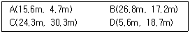
- 287.89m2
- 277.89m2
- 575.78m2
- 555.77m2
(정답률: 알수없음)
27. 그림과 같이 I=60˚ , R=200m의 구원곡선의 교점 P를 제1접선의 방향으로 30m 이동(P→P′)하고 그에 E라 제2접선도 평행 이동하며 B.C점의 위치는 이동 없이 새로운 원곡선을 설치할 경우 반지름 R′은 몇 m로 하여야 하는가?
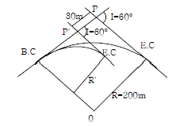
- 85.47m
- 115.47m
- 125.00m
- 148.04m
(정답률: 19%)
28. 측량결과가 그림과 같을 때 절토량과 성토량이 같게 되는 이 지역의 계획고는? (단, 직사각형의 넓이는 동일하고 토향변화는 고려하지 않는다.)
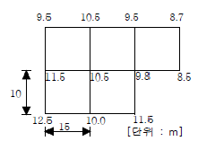
- 10.175m
- 10.218m
- 10.255m
- 10.318m
(정답률: 알수없음)
29. 터널 내외 연결측량에 대한 설명으로 잘못된 것은?
- 수직터널이 낮고 단면이 큰 경우에는 광학적인 방법을 이용하여 충분한 정확도를 얻을 수 있다.
- 터널 내외의 측점 위치관계를 명확하게 하기 위한 목적으로 실시한다.
- 수직터널이 한 개인 경우 수직터널에 한 개의 수선을 내리고 이 수선의 길이와 방위를 관측한다.
- 지하의 터널과 지상의 광산구역경계 및 중요 제점과 어떤 관계가 있는가를 조사하기 위한 측량이다.
(정답률: 알수없음)
30. 지상 및 지하시설물 등에 대한 지도 및 도면 등 제반 정보를 수치 입력하여 효율적으로 운영 관리하는 종합적인 관리체계를 무엇이라 하는가?
- SIS(Surveying Information System)
- CAD체계
- AM(Automated Mapping)
- FM(Facilities Management)
(정답률: 알수없음)
31. 지적삼각점 설치를 위한 지적삼각측량에 관한 설명 중 틀린 것은?
- 국가기준삼각점과 지적삼각점 을 기초로 측량한다 .
- 지적삼각점간 거리는 평균 20㎞ 정도로 한다.
- 삼각형의 내각은 30˚ ~ 120˚ 로 한다.
- 지적삼각점 명칭은 행정구역별로 일련번호를 부여한다
(정답률: 알수없음)
32. 노선측량의 곡선의 설치 등에 관한 설명으로 틀린 것은?
- 도로에서 복곡선을 사용하면 접속점에서 곡률이 급격히 변화되므로 가급적 피한다.
- 복곡선은 반향곡선보다 곡률의 변화가 심하여 반드시 완화곡선을 설치하여야 한다.
- 반향곡선과 복곡선의 기하학적인 성질과 설치법은 서로 거의 같다.
- 산지 같은 특수한 도로에서 속도저하 때문에 복곡선을 설치하는 경우가 있다.
(정답률: 알수없음)
33. 완화곡선에 대한 설명 중 잘못된 것은?
- 완화곡선의 접선은 종점에서 원호에 접한다.
- 원곡선과 직선부 사이에 넣는 특수곡선이다.
- 반지름은 0에서 조금씩 증가하여 일정한 값이 된다.
- 종류는 클로소이드, 3차 포물선, 렘니스케이트곡선 등이 있다.
(정답률: 알수없음)
34. 지구중심을 향한 깊이 800m의 두 수갱에 대하여 지표에서의 두 수갱간 거리를 600m라 하면 지하 800m에서의 두 수갱간 거리는? (단, 지구의 반지름=6370㎞)
- 599.246m
- 599.925m
- 599.993m
- 600.075m
(정답률: 알수없음)
35. 수로가 비교적 직선이고 단면적도 규칙적이며 하상이 편평한 상태에서의 평균유속을 설명한 것 중 맞는 것은?
- 수면으로부터 평균유속까지의 깊이는 수심과 하천폭과의 비가 증가함에 따라서 커진다.
- 일반적으로 평균유속의 위치는 수심의 0.2~0.3 사이에 존재한다.
- 하상의 표면이 조잡할수록 평균유속의 위치는 낮아지고 평활할수록 높아진다.
- 하상의 표면에 상관없이 평균유속의 위치는 같다.
(정답률: 알수없음)
36. 다음 중 경관의 3요소와 거리가 먼 것은?
- 경제성
- 조화감
- 순화감
- 미의식의 상승
(정답률: 알수없음)
37. 고속도로의 완화곡선 설치에는 다음 중 어느 곡선을 많이 이용하는가?
- sine 곡선
- 클로소이드 곡선
- 렘니스케이트 곡선
- 3차 포물선
(정답률: 알수없음)
38. 그림과 같이 2중 부자를 이용하여 유속을 관측하고자 할때 평균유속을 직접관측하기 위해서 수면에 있는 부자와 수중에 있는 부자간의 간격( ℓ )으로 적당한 길이는?
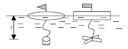
- 수심의 20% 깊이
- 수심의 40% 깊이
- 수심의 50% 깊이
- 수심의 60% 깊이
(정답률: 알수없음)
39. 그림에서 R=500m이고, γ=35˚ , β=55˚ 일 때 DA의 길이는? (단, CD의 길이는 200m 이다.)
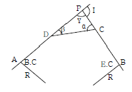
- 1237.108m
- 1300.168m
- 1348.689m
- 1585.797m
(정답률: 알수없음)
40. 하천측량에서 하천의 수위를 정할 때 어떤 기간을 통하여 관측한 수위 중 이것보다 높은 수위와 낮은 수위의 관측회수가 같은 수위를 무엇이라고 하는가?
- 최다수위(最多數位)
- 평균수위(平均數位)
- 평수위(平水位)
- 평균저수위(平均低水位)
(정답률: 70%)
3과목: 사진측량 및 원격탐사
41. 다음 중 상호표정 인자가 아닌 것은?
- κ (카파)
- ψ (휘)
- ω (오메가)
- α (알파)
(정답률: 알수없음)
42. 지형지물의 검색, 관리 및 재해방지, 물류, 부동산관리 등 지리정보의 다양한 활용을 위하여 지도상의 핵심 지형지물에 부여하는 고유번호를 무엇이라 하는가?
- RFID
- UFID
- 메타데이타
- 도엽번호
(정답률: 알수없음)
43. 평지를 촬영고도 4500m에서 촬영한 밀칙사진의 종중복도가 60%, 횡중복도가 30% 일 때, 이 연직사진의 유효모델의 면적은? (단, 사진면의 크기=23㎝×23㎝, 초점거리=150㎜)
- 1.33km2
- 13.3km2
- 133km2
- 1333km2
(정답률: 알수없음)
44. 지상기준점으로 사용하기 위해 대공표지를 설치하고자 한다. 만약 항공사진기가 초광각 카메라( 화각 : 120˚ )이고, 표정기준점 설치 위치의 주위에 높이가 10m인 건물이 있다면 건물에서 최소 몇 미터 이상 떨어진 곳에 대공표지를 설치해야 하는가?
- 약 10.00m
- 약 14.14m
- 약 17.32m
- 약 19.45m
(정답률: 알수없음)
45. 다음의 인공위성 영상자료 중 공간해상도가 가장 좋은 것은?
- SPOT-3호의 HRV 전정색모드 영상자료
- IKONOS-2호의 다중분광모드 영상자료
- IRS-1C호의 PAN 영상자료
- 아리랑1호의 EOC 영상자료
(정답률: 알수없음)
46. 촬영보조기재를 크게 촬영조건을 결정하기 위한 것과 항법의 정확도는 높이기 위한 것으로 나눌 때 다음 중 항법의 정확도를 높이기 위한 보조기재는?
- 수평선사진기
- GPS(Global Positioning System)
- 고도차계
- 자이로스코우프(gyroscope)
(정답률: 알수없음)
47. 다음 사진측량에 관한 설명 중 옳지 않은 것은?
- 사진의 상은 중심투영에 의한 상이 된다.
- 내부표정이란 도화기의 투영기에 촬영 당시와 똑같은 상태로 양화건판을 정착시키는 작업을 말한다.
- 불완전모델이란 계획된 중복도로 촬영하지 않으므로 촬영대상 지역이 나타나지 않는 모델을 말한다.
- 절대표정은 축척, 수준면, 위치 결정을 하는 작업이다.
(정답률: 알수없음)
48. 래스터 자료 저장 구조 중 다음 그림과 같은 저장 방법은?
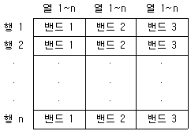
- BIL
- BSQ
- BIP
- GeoTiff
(정답률: 알수없음)
49. 지표면의 비고가 100m인 구릉지를 초점거리 150㎜인 카메라로 연직촬영한 사진의 크기는 23㎝ × 23㎝이다. 촬영축척이 1/20000 일 때 이 사진의 비고에 의한 최대 변위는?
- 0.74㎝
- 0.54㎝
- 0.35㎝
- 0.15㎝
(정답률: 알수없음)
50. 항공사진 또는 위성영상을 지상기준점(GCP)을 이용해 왜곡된 영상의 좌표와 실제 지표 좌표를 연계하여 영상의 좌표를 지도 좌표계와 일치시키는 과정을 무엇이라 하는가?
- 대기보정(Atmospheric Correction)
- 방사량보정(Radiometric Correction)
- 시스템보정(System Correction)
- 기하보정(Geometric Correction)
(정답률: 알수없음)
51. 다음 항공사진의 판독 순서 중 옳은 것은?
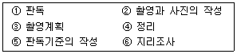
- ③ - ② - ⑤ - ① - ⑥ - ④
- ③ - ⑥ - ② - ⑤ - ① - ④
- ③ - ⑤ - ② - ① - ⑥ - ④
- ③ - ⑥ - ⑤ - ② - ① - ④
(정답률: 알수없음)
52. 다음 중 디지타이징 작업에서 발생하는 오류가 아닌 것은?
- Spline
- Overshoot
- Undershoot
- Spike
(정답률: 알수없음)
53. 래스터(또는 그리드)저장기법 중 어떤 객체의 경계선을, 그 시작점에서부터 동서남북 방향으로 4방 혹은 8방으로 순차 진행하는 단위 백터를 사용하여 표현하는 방법은?
- 사지 수형 기법
- 블록 코드 기법
- 체인 코드 기법
- Run-length 코드 기법
(정답률: 알수없음)
54. GIS에서 표준화가 필요한 이유를 설명한 것 중 타당하지 않은 것은?
- 서로 다른 기관인 데이터 유출의 방지 및 데이터의 보안을 유지하기 위하여
- 데이터의 제작시 사용된 하드웨어(H/W)나 소프트웨어에(S/W)에 구애받지 않고 손쉽게 데이터를 사용하기 위하여
- 표준 형식에 맞추어 하나의 기관에서 구축한 데이터를 많은 기관들이 공유하여 사용할 수 있으므로
- 데이터의 공동 활용을 통하여 데이터의 중복 구축을 방지함으로써 데이터 구축 비용을 절약하기 위하여
(정답률: 알수없음)
55. 다음 설명의 (A), (B), (C)에 포함되는 용어로 가장 거리가 먼 것은?
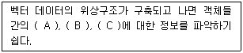
- 인접성(Adjacency)
- 연결성(Connectivity)
- 포함성(Containment)
- 완결성(Completeness)
(정답률: 알수없음)
56. 다음 원격탐사 데이터의 유형 중 광학적인 형태의 항공사진과 같이 도화 과정을 통해 지형도 제작에 주로 이용되는 것은 무엇인가?
- 전정색영상(Panchromatic Image)
- 다중분광영상(Multispectral Image)
- 레이터영상(Synthetic Aperture Radar Image)
- 초음파영상(Ultrasonic Image)
(정답률: 알수없음)
57. 다음 중 GIS 자료출력용 하드웨어가 아닌 것은?
- 모니터
- 플로터
- 프린터
- 디지타이저
(정답률: 알수없음)
58. 초점거리가 210㎜, 사진크기 18㎝×18㎝, 종중복도 60% 일때 기선고도비는?
- 0.34
- 0.47
- 0.51
- 0.70
(정답률: 알수없음)
59. 사진상의 주점이나 표정점 등 제점의 위치를 인접한 사진상에 옮기는 작업은?
- 점이사
- 점수정
- 점인접
- 점이동
(정답률: 알수없음)
60. 초점거리 150㎜의 사진기로 고도 3000m에서 종중복도 60%로 촬영했다. 사진의 크기는 23㎝×23㎝, 항공기의 속도가 200㎞/h 라고 하면 최소 노출시간(촬영간격)은 몇 초인가?
- 약 11초
- 약 22초
- 약 33초
- 약 44초
(정답률: 알수없음)
4과목: 지리정보시스템
61. 3㎝가 늘어난 50m 줄자를 사용하여 어떤 거리를 측정한 결과 175m를 얻었을 때 실제의 길이는?
- 173.950m
- 174.895m
- 175.1⑤m
- 176.⑤0m
(정답률: 알수없음)
62. 다음 다각측량 결과(위거, 경거)에 의한 5각형의 면적은? (단, A점의 합위거 = 0, 합경거 = 0 이고, 단위는 m)
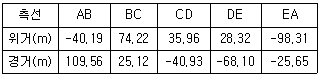
- 11399.188 m2
- 20348.111 m2
- 10174.⑤6 m2
- 22798.376 m2
(정답률: 알수없음)
63. ±(5㎜+5ppm ∠)의 정확도를 갖는 광파측거기를 사용한다고 할 때, 2000m의 거리에서 예측되는 표준오차는 얼마인가? (단, ∠:거리, 구심오차는 무시함)
- ±7.07㎜
- ±10.00㎜
- ±11.18㎜
- ±3.87㎜
(정답률: 알수없음)
64. 줄자로 거리를 관측할 때 줄자의 정중앙에 초목이 있어 수평으로부터 30㎝ 위로 휘어졌다고 하면 그 원인에 의한 관측 거리 50m에 대한 오차(절대값)는 얼마인가?
- 1.8㎜
- 3.6㎜
- 18㎜
- 36㎜
(정답률: 알수없음)
65. A, B 2점간의 거리를 같은 광파거리측량기를 사용하여 측정하였다. 이 때에 2점간 거리의 최확값은? (단, 1차 평균 거리 1000.010m, 표준편차 0.006m, 2차 평균 거리 1000.020m, 표준편차 0.002m)
- 1000.019m
- 1000.0175m
- 1000.011m
- 1000.008m
(정답률: 알수없음)
66. 동일한 사람이 20″독과 1′독 트랜싯을 사용하여 각 측량을 하면 그 관측값에 대한 무게(weight: 경중률)의 비는? (단, 기타 조건은 동일한 것으로 가정한다.)
- 1 : 3
- 2 : 1
- 3 : 1
- 9 : 1
(정답률: 알수없음)
67. 수준측량에서 수평거리 5㎞일 때의 지구의 곡률오차는? (단, 지구의 곡률반경은 6370㎞)
- 0.862m
- 1.962m
- 3.925m
- 4.862m
(정답률: 알수없음)
68. 1회 거리측정에서의 정오차가 ε이라고 하면 같은 상황에서 같은 기기로 4회 측정하였을 경우 생기는 정오차의 크기는?
- ε
- 2ε
- 4ε
- 16ε
(정답률: 알수없음)
69. 축척 1:10000의 지형도에서 1/22 기울기로 올라가는 도로를 건설하려고 할 때 등고선(주곡선)간의 수평거리는?
- 22m
- 100m
- 110m
- 220m
(정답률: 알수없음)
70. 트래버스측량에 의하여 가장 정확도가 요구되는 측량에서 사용하여야 할 방법은?
- 기지점으로부터 출발하여 다른 기지점에 결합하는 트래 버스
- 임의의 측점에서부터 출발하여 동일 측점으로 되돌아와 폐합하는 트래버스
- 정도가 높은 삼각점에서 출발하는 개방 트래버스
- 임의의 점에서 삼각점에 결합하는 트래버스
(정답률: 알수없음)
71. 축척 1/5000 의 수치지도에서 산기슭으로부터 정상까지 직선거리를 재어보니 24㎝이며, 산기슭의 표고는 175m, 산정상의 표고는 480m이었다. 이 사면의 경사는 얼마인가?
- 약 1/3.9
- 약 1/5.8
- 약 1/7.4
- 약 1/9.3
(정답률: 알수없음)
72. 30m에 대하여 6㎜ 늘어나 있는 줄자로 정방형의 지역을 측량 한 결과 62500m2이었다. 실제면적은?
- 62525m2
- 62513m2
- 62488m2
- 62475m2
(정답률: 알수없음)
73. 교호 수준 측량을 실시하여 다음과 같은 결과를 얻었다. 이때 B점의 표고는? (단, 단위는 m이다.)
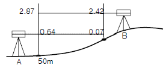
- 49.35m
- 50.51m
- 50.65m
- 50.85m
(정답률: 알수없음)
74. 다음 그림과 같은 결합트래버스의 측각오차식은? (단, [a] : 측각(a1~an)의 총합)
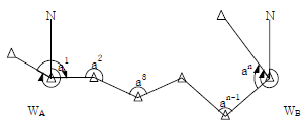
- Ea = WA - WB +[a]-180° (n-1)
- Ea = WA - WB +[a]-180° (n+1)
- Ea = WA - WB +[a]-180° (n-3)
- Ea = WA - WB +[a]-180° (n+3)
(정답률: 46%)
75. 다음 삼각망에서 조건식의 총수는 얼마인가?
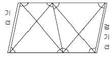
- 13
- 9
- 7
- 5
(정답률: 알수없음)
76. 2등 수준측량에서 2㎞ 왕복 수준측량한 결과 25㎜의 오차가 발생했다. 처리하는 방법으로 옳은 것은?
- 재측한다.
- 오차가 작으므로 무시한다.
- 오차가 과대한 장소에만 조정한다.
- 평균에 의해 고저차를 결정한다.
(정답률: 알수없음)
77. 삼각망에 대한 특징을 잘못 설명한 것은?
- 단열삼각망은 같은 거리에 대하여 측점수가 가장 적으므로 측량은 간단하여 경제적이나 조건식의 수가 적어서 정밀도가 낮다.
- 사변형삼각망은 조건식의 수가 많아서 다른 삼각망에 비해 정밀도가 높다.
- 유심삼각망은 면적이 넓고 광대한 지역의 측량에 좋다.
- 사변형삼각망은 폭이 좁고 길이가 긴 도로, 하천, 철도 등의 측량을 시행할 경우에 주로 사용된다.
(정답률: 알수없음)
78. 등고선에 대한 다음 설명 중 틀린 것은?
- 등고선은 서로 만날 수도 있다.
- 경사가 급할수록 등고선의 간격이 좁다.
- 경사가 같으면 등고선 간격이 길고 서로 평행하다.
- 등고선은 최대경사선과는 직교하지만 분수선과는 직교하지 않는다.
(정답률: 알수없음)
79. 결합트래버스 측량에 있어서 노선장이 4㎞ 되는 장소에서 폐합비의 제한이 1/500000 일 경우 허용되는 폐합차는 얼마인가?
- 1.25㎝
- 1.00㎝
- 0.80㎝
- 0.60㎝
(정답률: 알수없음)
80. 삼각측량에 있어서 삼각점의 수평위치를 결정하는 요소는 무엇인가?
- 거리와 방향각
- 고저차와 방향각
- 밀도와 폐합비
- 폐합오차와 밀도
(정답률: 알수없음)
5과목: 측량학
81. 측량업별 업무 내용에 대한 설명으로 틀린 것은?
- 일반측량업 : 공공측량(설계금액이 3천만원 이하인 경우에 한한다.)과 일반측량으로서 토지에 대한 측량 등
- 측지측량업 : 기본측량으로서의 측지기준점 측량과 공공측량 및 일반측량으로서의 토지의 대한 측량
- 지도제작업 : 지도책자 등을 간행하거나 인터넷 등 통신매체에 의하여 지도를 서비스하기 위한 지리조사, 데이터의 입ㆍ출력 및 편집ㆍ제도
- 항공 촬영업 : 측량용 사진과 위성영상을 이용한 도화기 상에서의 지형ㆍ지물의 측정 업무
(정답률: 알수없음)
82. 다음 중 측량업 등록을 할 수 있는 자는?
- 측량업 등록이 취소된 후 1년이 경과된 자
- 금고이상의 형의 집행유해선고를 받고 그 집행유해기간 중에 있는 자
- 금고이상의 실형의 선고를 받고 그 집행이 면제된 날부터 2년이 경과된 자
- 파산선고를 받고 복권되지 아니한 자
(정답률: 알수없음)
83. 기본측량의 성과 중 허가 없이 국외로 반출할 수 있는 경우에 대한 설명으로 옳은 것은?
- 측량용 사진과 해저 지형도
- 축척 5,000분의 1 지도
- 정부를 대표하여 외국정부와 교섭하는 자가 자료로 사용하고자 하는 지도 및 연안해역기본도
- 대한민국 정부와 외국정부간에 체결된 협정에 의하여 상호 교환코자 하는 측량용 사진
(정답률: 50%)
84. 시ㆍ군ㆍ구지명위원회의 구성으로 옳은 것은?
- 위원장 및 부위원장 각 1인을 포함한 5인 이내의 위원
- 위원장 및 부위원장 각 1인을 포함한 10인 이내의 위원
- 위원장 및 부위원장을 제외한 7인 이내의 위원
- 위원장 및 부위원장 각 1인을 포함한 7인 이내의 위원
(정답률: 알수없음)
85. 다음 중 기본 측량에 관한 연간계획을 수립하는 자는?
- 국토해양부장관
- 국토지리정보원장
- 도지사
- 대한측량협회장
(정답률: 알수없음)
86. 다음 중 측량법에 정의한 측량계획기관이란?
- 측량업을 영위하는 기관
- 기본측량 및 공공측량에 관한 계획을 수립하는 자
- 측량에 관한 계획, 설계에 따라 측량을 실시하는 자
- 측량에 관한 계획, 설계, 실시, 지도, 감리 및 조사 연구를 하는 자
(정답률: 알수없음)
87. 기본측량의 실시공고에 대한 설명으로 옳은 것은?
- 국토해양부장관이 한다.
- 국토지리정보원장이 한다.
- 특별시장, 광역시장, 도지사 또는 제주특별자치도지사가 한다.
- 측량작업기관이 한다.
(정답률: 알수없음)
88. 측량업자가 폐업한 때의 신고의무에 대한 설명으로 옳은 것은?
- 청산인이 사유가 발생한 날로부터 20일 이내에 신고
- 측량업자이었던 개인 또는 법인의 대표자가 사유가 발생한 날로부터 40일 이내에 신고
- 측량업자이었던 개인 또는 법인의 대표자가 사유가 발생한 날로부터 30일 이내에 신고
- 청산인이 사유가 발생한 날로부터 60일 이내에 신고
(정답률: 알수없음)
89. 공공측량에 대한 정의로 가장 알맞은 것은?
- 국토지리정보원장이 계획, 실시하는 측량이다.
- 모든 측량의 기초가 되는 측량이다.
- 기본측량외의 측량중 국가ㆍ지방자치단체 등의 기관이 실시하는 측량을 말한다.
- 일반측량의 측량성과를 기초로 하여 실시하여야 한다.
(정답률: 알수없음)
90. 1/25,000 및 1/50,000 지형도 도식적용규정에서 지류의 표시원칙으로 잘못된 것은?
- 지류계와 지류 기호로 표시한다.
- 기호는 도곽하변에 대하여 수직으로 표시한다.
- 잡초지를 포함한 거친 땅으로서 경지로 사용되지 않는 토지는 풀밭 지류 기호로써 표시한다.
- 일반적으로 도상에서 5mm2인 것에 대하여 표시한다.
(정답률: 알수없음)
91. 기본측량을 위한 영구표지를 설치할 때에 국토지리정보원장이 행할 사항은?
- 표지의 종류와 설치장소를 시ㆍ도지사에게 통지한다.
- 표지의 종류와 설치장소를 당해 시장ㆍ군수에게 통지한다.
- 표지의 종류와 설치장소를 당해 지역의 경찰서장에게 통지한다.
- 표지의 종류와 설치장소를 측량회사에게 통지한다.
(정답률: 알수없음)
92. 지형도 도식적용규정의 목적과 가장 거리가 먼 것은?
- 지형, 지물 등의 표시방법에 관한 기준을 정함
- 각종 기호의 적용방법에 관한 기준을 정함
- 기호 및 주기의 선택에 관한 기준을 정함
- 기준점 위치의 측량 방법에 관한 기준을 정함
(정답률: 알수없음)
93. 우리나라의 측량 기준을 설명한 것으로 잘못된 것은?
- 위치는 지도제작 등에 필요한 경우에는 직각좌표 및 평균해면으로부터의 높이로 표시할 수 있다.
- 측량의 원점은 지역측지계에 의한다.
- 거리 및 면적은 회전타원체면상의 값으로 표시한다.
- 지리학적 경위도는 세계측지계에 따라 측정한다.
(정답률: 알수없음)
94. 다음 중 측량법에서 사용하는 용어의 정의로 잘못된 것은?
- 일반측량이라 함은 공공측량 외의 모든 측량을 말한다. 다만, 대통령이 정하는 바에 의하여 국토지리정보원장이 지정하는 측량은 제외한다.
- 기본측량이라 함은 모든 측량의 기초가 되는 측량으로서 국토해양부장관의 명을 받아 국토지리정보원장이 실시하는 것을 말한다.
- 측량기록이라 함은 측량성과를 얻을 때까지의 측량에 관한 작업의 기록을 말한다.
- 측량작업기관이라 함은 측량계획기관의 지시 또는 위임에 의하여 측량에 관한 작업을 실시하는 자를 말하며, 측량계획기관이 그 계획한 측량을 직접 실시하는 경우를 포함한다.
(정답률: 알수없음)
95. 1/25,000 지형도에서 채택하고 있는 투영방법은?
- 만국횡단머케이트 투영(U.T.M)
- 횐단머케이트 투영(T.M)
- 몰와이드 투영
- 원추투영
(정답률: 알수없음)
96. 측량기기 성능검사필증에 기재사항이 아닌 것은?
- 측량기기명
- 측량기기번호
- 검사유효기간
- 측량기기 구입 연월일
(정답률: 알수없음)
97. 공공측량의 측량성과와 측량기록의 사본을 교부받고자 할때 신청하는 기관은?
- 국토해양부장관
- 당해 공공측량계획기관
- 당해 공공측량작업기관
- 국토지리정보원장
(정답률: 알수없음)
98. 성능검사를 받아야 하는 측량 기기 중 토털스테이션의 성능검사주기는 몇 년인가?
- 1년
- 2년
- 3년
- 4년
(정답률: 알수없음)
99. 기본측량을 위하여 설치된 측량표를 이전, 손괴, 기타 효용을 해하는 행위를 한 자가 받는 벌칙으로 옳은 것은?
- 1년 이하의 징역 또는 1000만원 이하의 벌금에 처한다.
- 200만원 이하의 과태료를 부과한다.
- 2년 이하의 징역 또는 2000만원 이하의 벌금에 처한다.
- 200만원 이하의 벌금에 처한다.
(정답률: 알수없음)
100. 다음 중 중앙지명위원회의 부위원장이 되는 자는?
- 국토해양부차관
- 행정안전부장관
- 국토지리정보원에서 지명엄무를 담당하는 과장 또는 담당관
- 국토지리정보원장
(정답률: 알수없음)